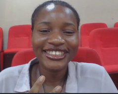

Hello there!
My name is Oboh Mary, a Computer Science student at Babcock University, currently in 300 level. I am passionate about technology and enjoy learning how software can be used to solve real-world problems.

My name is Oboh Mary, a Computer Science student at Babcock University, currently in 300 level. I am passionate about technology and enjoy learning how software can be used to solve real-world problems. I have experience with programming languages and technologies such as HTML, CSS, JavaScript and Python. I am continuously improving my programming and problem-solving skills by working on projects and exploring different areas of software development. I am currently learning to become a Full-Stack Developer, with a focus on both frontend and backend development. My goal is to build responsive, functional, and user-friendly web applications while gaining a strong understanding of how the different parts of a web application work together. I’m always open to learning new technologies, taking on challenges, and improving my skills as I grow as a developer.
Here's a copy of my CV
technologies and languages i work with:
Currently learning React, SQL, Node
These are some of my projects: